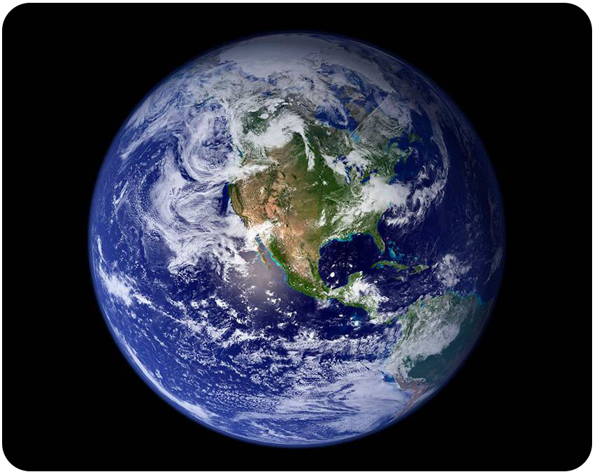
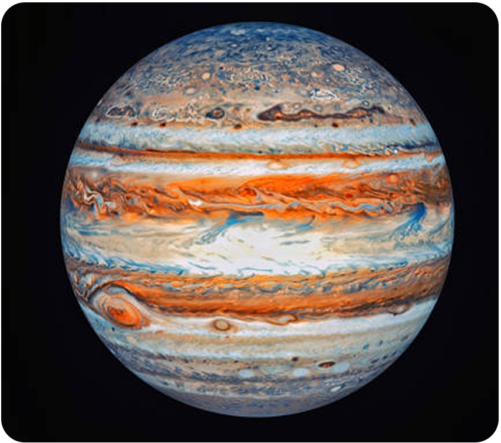
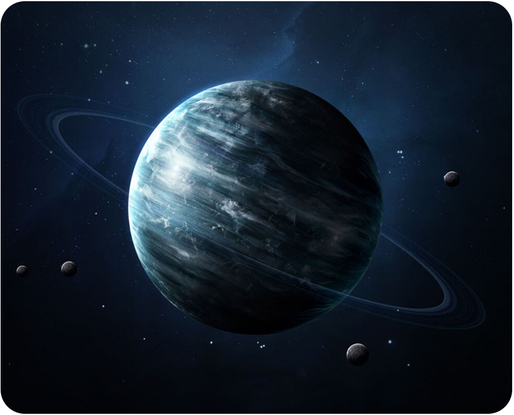

Mercúrio é o planeta mais próximo do Sol e o menor do Sistema Solar. Tem uma superfície rochosa e craterada, semelhante à da Lua.
Características:
Vênus é um planeta rochoso do sistema solar, o segundo mais próximo do Sol e o mais próximo da Terra. É conhecido por ser o planeta mais quente do sistema solar. Características Vênus é um planeta rochoso, assim como a Terra e Mercúrio. É o segundo planeta mais próximo do Sol. É o planeta mais quente do sistema solar. A atmosfera de Vênus é muito mais densa que a da Terra. A atmosfera de Vênus é composta por 96,5% de dióxido de carbono. A pressão atmosférica de Vênus é 90 vezes maior que a da Terra. Vênus não possui luas. A superfície de Vênus é inabitável para a humanidade. Curiosidades Vênus é conhecido como Estrela Dalva, estrela da manhã, estrela da tarde e joia do céu. A luz refletida por Vênus é popularmente denominada de “estrela Dalva”. Vênus pode ter sido habitável há 3 bilhões de anos. Um dia em Vênus dura 243 dias terrestres, sendo a maior duração de um dia em nosso sistema solar. Na Astrologia, Vênus representa a esfera afetiva.
O planeta Terra é o planeta onde vivemos, e é o único planeta do Sistema Solar onde existe água em estado líquido. É também o maior dos quatro planetas telúricos do Sistema Solar, juntamente com Mercúrio, Vênus e Marte. A Terra tem uma estrutura interna dividida em crosta, manto e núcleo, e uma estrutura externa formada pela litosfera, hidrosfera, biosfera e atmosfera. Algumas características do planeta Terra: A Terra tem um diâmetro de cerca de 12.756 km na Linha do Equador A Terra tem uma massa de 5,972 × 1024 kg e um volume de 1,08321×1012 km3 A Terra tem um único satélite natural, a Lua A Terra tem um campo magnético que protege o planeta do bombardeio de partículas do Sol A Terra tem uma superfície coberta por oceanos, continentes e ilhas A Terra orbita o Sol em 365,26 dias solares A Terra é o terceiro planeta mais próximo do Sol A Terra é o planeta onde existe vida, graças às suas características, como a presença de água em estado líquido, oxigênio e temperatura média de 14 °C.
"Marte é um dos planetas do Sistema Solar; o quarto a partir do Sol. Possui dois satélites naturais, que são as suas luas: Phobos, a maior e mais próxima, e Deimos. Acredita-se que ambas são asteroides que foram capturados pela gravidade. Um dia em Marte tem duração de 24 horas e 37 minutos, enquanto o ano possui 687 dias. Marte possui uma fina camada atmosférica, composta principalmente por dióxido de carbono, nitrogênio e argônio. A superfície marciana é rochosa, e por essa razão o planeta é considerado terroso. Sua coloração avermelhada é em decorrência da composição mineral dessas rochas. Existem diversas feições na superfície de Marte que indicam a existência pretérita de água líquida naquele planeta. A luz do Sol demora em média 13 minutos para chegar à superfície marciana. Muitas missões de exploração tentam hoje descobrir a existência de vida pretérita e o potencial do planeta para suportar formas de vida." Veja mais sobre "Planeta Marte" em: https://brasilescola.uol.com.br/geografia/marte.htm
Júpiter é o maior planeta do Sistema Solar, um gigante gasoso formado por hidrogênio e hélio. Ele é o quinto planeta a partir do Sol, entre Marte e Saturno. Características É um planeta gasoso, sem superfície sólida Tem uma rápida rotação, o que o faz ficar achatado nos pólos e bojudo no equador Emite duas vezes mais calor do que recebe do Sol Tem uma atmosfera dividida em faixas, com turbulência e tempestades A Grande Mancha Vermelha é uma tempestade que dura centenas de anos Tem anéis, mas são muito tênues Tem cerca de 95 luas conhecidas História Foi observado pela primeira vez por Galileu Galilei em 1610 A sonda Pioneer 10 foi a primeira a visitar Júpiter, em 1973 A sonda Galileu orbitou Júpiter por oito anos, até setembro de 2003 Visibilidade Pode ser visto a olho nu em locais com boa visibilidade do céu Com um telescópio, é possível observar as manchas de sua atmosfera e algumas de suas luas
O Planeta Saturno possui 9 vezes o tamanho do planeta Terra e é formado principalmente por gases. Dispõe de 7 conjuntos de anéis circundantes e 82 luas, como Titã, a maior e mais conhecida. Saturno é o segundo maior planeta do Sistema Solar. Destaca-se pela presença de anéis formados por fragmentos de gelo e rocha.
Urano é o sétimo planeta a partir do Sol e o terceiro maior do Sistema Solar. É um planeta gasoso, com uma atmosfera composta por hidrogênio, hélio, metano e outros hidrocarbonetos. Características Urano é azul-esverdeado, devido à absorção de luz vermelha pelo metano na sua atmosfera Tem um sistema de anéis, que não são visíveis a olho nu Possui diversas luas, incluindo Titânia e Oberon É o planeta mais frio do Sistema Solar, podendo atingir temperaturas de -224ºC Tem uma posição inclinada, o que faz com que os seus polos norte e sul estejam quase onde seria o equador de outros planetas Descoberta Foi descoberto em 1781 pelo astrônomo alemão William Herschel Foi nomeado em homenagem ao deus grego do céu, Urano Exploração A sonda Voyager 2 visitou Urano em 1986, descobrindo 10 pequenas luas e mais 2 anéis O Telescópio Espacial Hubble observou nuvens em Urano e a oscilação dos anéis
Netuno é o oitavo e último planeta do Sistema Solar, sendo um gigante gasoso e gelado. É o planeta mais distante do Sol, com uma média de 4,5 bilhões de quilômetros de distância. Características É conhecido por sua cor azul Tem uma temperatura média de -223 ºC Possui um campo magnético muito forte Tem um sistema de anéis com pelo menos cinco anéis Possui 14 satélites naturais, sendo Tritão o maior Possui ventos mais rápidos do Sistema Solar, que podem atingir mais de 2000 km/h Descoberta Foi descoberto em 1846 O nome do planeta é derivado do deus romano dos oceanos, Netuno Exploração A única nave espacial que já visitou Netuno foi a Voyager 2, em 1977 Devido à distância do planeta, é muito difícil construir naves que possam fazer uma viagem tão longa e permanecer por lá tempo suficiente para fazer pesquisas
Desenvolvido por PS.Tech